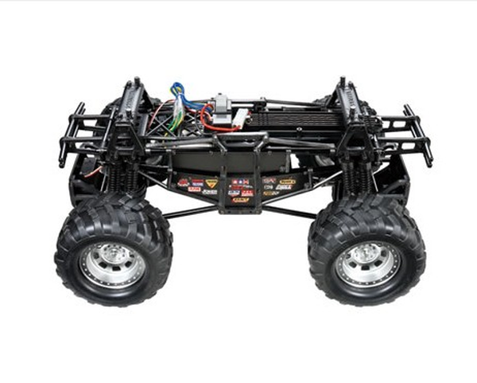

タミヤ TXT-2

引用元画像：タミヤ公式サイト
📋 基本情報
| メーカー | タミヤ（Tamiya） |
|---|---|
| 機種名 | TXT-2（アグリオス） |
| 型番 | 58549 |
| 発売時期 | 2013年5月25日 |
| 価格 | 52,800円（本体価格48,000円） |
| 生産状況 | 生産終了 ※1/10RC スーパークラッドバスター ブラックエディションが復刻されたばかりなので、まだ手に入る可能性が高いです。 |
| カテゴリー | ラジコンカー（1/10スケール 電動RCカー） |
| サブカテゴリー | モンスタートラック（4×4ビッグフット） |
| 関連機種 | TXT-1の後継機 |
📏 シャーシスペック
| 全長 | 510mm |
|---|---|
| 全幅 | 344mm |
| 全高 | 282mm |
| 車体重量 | 3,995g（RCメカ・バッテリー含まず） |
| ホイールベース | 330mm |
| トレッド | 前後とも262mm |
| タイヤ幅/径 | 前後とも82/151mm |
| フレーム | ABS樹脂製ボックスタイプ（ラダーフレーム） |
⚙️ 駆動系
| 駆動方式 | シャフトドライブ4WD |
|---|---|
| デフギヤ | 前後とも3ベベルデフ |
| ギヤ比 | 26.3:1 |
| モーター | 540タイプ×2個（並列配置ツインモーター） |
| スピードコントローラー | ツインモーター対応ESC（別売） |
🔧 サスペンション
| 形式 | 前後とも4リンクリジッド |
|---|---|
| ダンパー | 1輪につき2本のCVAオイルダンパーを装備 |
| ステアリング | 2分割タイロッド式 |
| リンクロッド | 全てブラックフィニッシュされたアルミ製 |
💡 特徴
TXT-1の後継機として登場
- TXT-1シャーシの後継機に相当するシャーシ
- 「モンスタートラック アグリオス」に採用されて登場
- 第52回 静岡ホビーショーおよびニュルンベルク・トイフェア2013にて展示
高剛性なラダーフレーム
- ギヤボックスを中央部分に挟み込み、その前後にアルミ製ビームを追加
- アルミシャフトを樹脂にインサート成形し、さらにアルミパネルを加えたサイドフレーム
- TXT-1に比べると軽量化を実現
- 強度に優れるラダーフレーム形状を採用
ツインモーターによる高いトルク
- 並列配置のツインモーターを採用
- パワー重視の駆動系構成
- 車体中央のトランスファーからプロペラシャフトで前後のアクスルに動力を伝達
- 前後の樹脂製アクスルケースはパワー入力部分を2階建て構造
走破性に優れる足回り
- 前後サスペンションはオフロードでの走破性に優れる車軸懸架方式の4リンクリジッド
- 1輪につき2本のオイルダンパーを装備
- モンスターサイズのタイヤ（幅82mm、直径151mm）
- 十分なストロークを持つサスペンション
四輪操舵への対応
- ステアリング用サーボモータをリヤ側にも追加することで四輪操舵(4WS)も可能
🔧 ぽすとそに工房での修理実績
修理難易度
★☆☆☆☆（ぽすとそに工房）/ ★★★☆☆（初心者）
現物を所有していますので、何度も触ったことがあります。
よくある故障・注意点
- ツインモーター構成のため、電力消費が大きい
- ツインモーター対応ESCが必要（別売）
- 重量級（約4kg）のため、クラッシュ時の衝撃に注意
- オイルダンパーのメンテナンスが重要（1輪につき2本装備）
- 大径タイヤの空気抜けや破損に注意
修理のポイント
- TXT-1に比べて軽量化されており整備性が向上
- 樹脂パーツが多いため、破損時の交換が比較的容易
- オイルダンパーは定期的なオイル交換が推奨
- アルミリンクロッドの曲がりに注意
- ツインモーター用バッテリーの容量管理が重要
その他の特徴
- アグリオス（Agrios）はギリシャ神話の巨人族に由来
- 1.2mm厚のポリカーボネート製ボディ
- 実車ムードあふれるラダーフレームシャーシ
- ディープリムのメッキホイールを標準装備